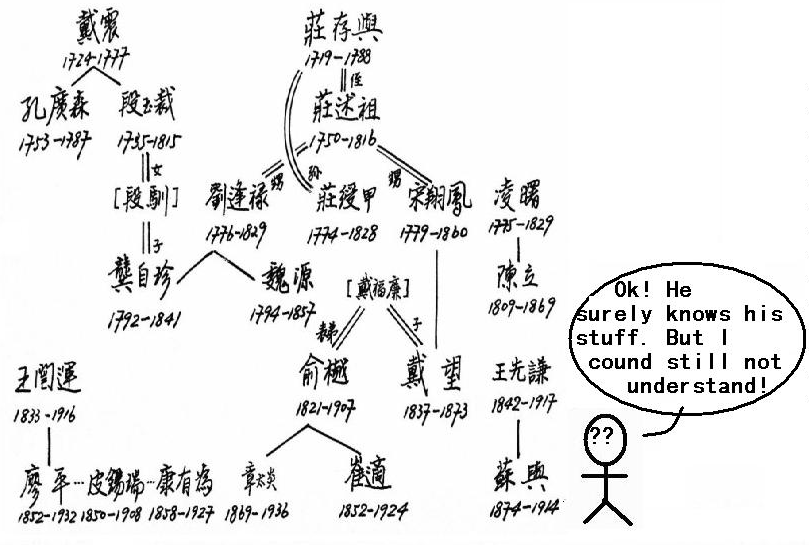
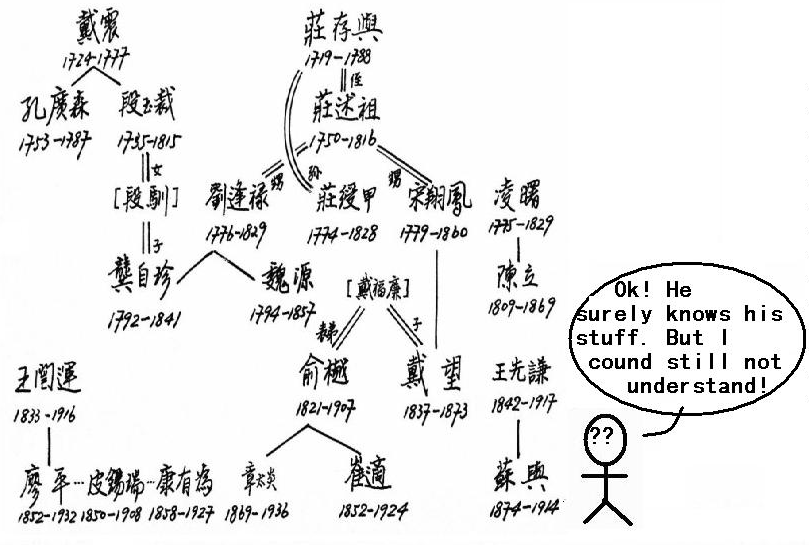
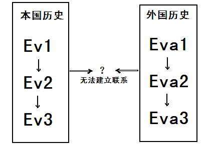
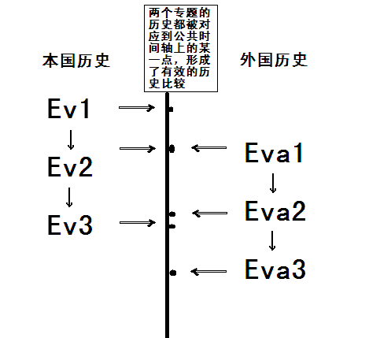
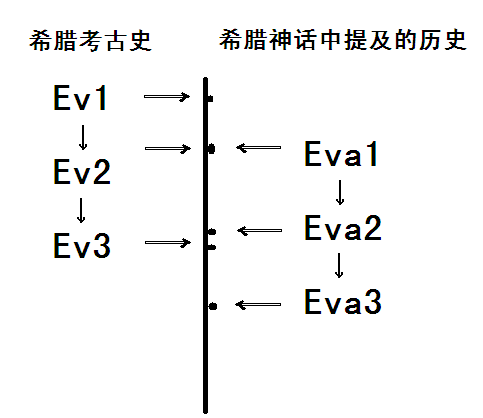

背景介绍
有的时候，我们经常会在网上遇到一系列复杂却又相关的概念，我们只能通过取消时间维度的作法，把一个个历时的、过程的概念浓缩成一个个“去时间化”的专有名词，再找到不同专有名词间的关系。然而，对于非专业人士来说，这毕竟是名词间的堆砌，虽然可能有一定逻辑，但并不直观，不利于学习、理解、记忆，遑论分析并进一步得出自己的结论。如果有一款程序能根据用户具体的需要，把每一个“专名”都还原成历时的、过程的“专题史”，再将每一个具体的专题史事件对准到统一的时间轴进行比较，则可帮助初学者极快速度地掌握基本史实概念，厘清关系，降低学习历史的门槛。
 


在学习或了解历史知识的过程中，我们经常会发现，很多国人对于西方世界的历史，尤其是古代史，往往很容易记住相对的时间顺序，比如事件之间的先后顺序，而很难厘清一个绝对的时间维度——脱离自己熟悉的某一主题历史（如本国历史）的参照系，就很难把某一时期的历史绝对掌握清楚。由于在大众观念里，东西方历史长期相互隔绝、平行发展，在学习的过程中，尤其在融会贯通之前，上述人群往往容易产生“西方世界的历史是‘平行世界’历史”的错觉，而很难建立整体的、系统的大历史观念。如果一款程序能通过“比较研究”的方法论优势，利用用户对本国史的“熟悉感”和时间轴的公共属性，构建出一个参照系，那么学习不熟悉的外国历史就变得和学习本国历史一样直观；学习话语权缺乏的少数民族和弱势族裔的历史，也会和学习耳熟能详的大国大族的历史一样简单；学习枯燥的物质文明历史（诸如陶瓷史、金属冶炼史、货币铸造史、作物培育史、药物发展史、器具形制史）就会和学习生动活泼的精神、社会文明历史一样有趣。

而有的时候，非历史专业的学生又面临着必须掌握历史知识才能完成特定课业任务的问题，比如学习美索不达米亚或希腊神话的学生，很希望在最短时间内获得该地区的历史知识（对于他们来说，这是不可或缺，但优先级并不在最前的“背景知识”），而又不影响他们在有限的时间内学好该地区的神话。对于这种问题，一款能同时比较该地区的历史、临近地区的历史、某一文明的专题史（如文化史、文学艺术史、考古史、政治经济史等）的工具，可使学习者获益良多，还节省了自己的宝贵时间。

这样，用户可根据自己的需要，编辑或下载不同专题的电子文档，从而获得最适合自己学习或工作任务的独特的历史比较表格：